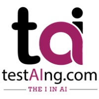

Machine Learning Intern, TestAIng.com
Apr 2025 - June 2025
- Created user-focused documentation for machine learning pipelines to support development and testing teams.
- Streamlined company operations by documenting internal workflows and coordinating with senior mentors for organizational planning.
- Contributed to the development of text classification pipelines aligned with real-world education technology use cases.

Intern Rendezvous: Presented on Object Detection